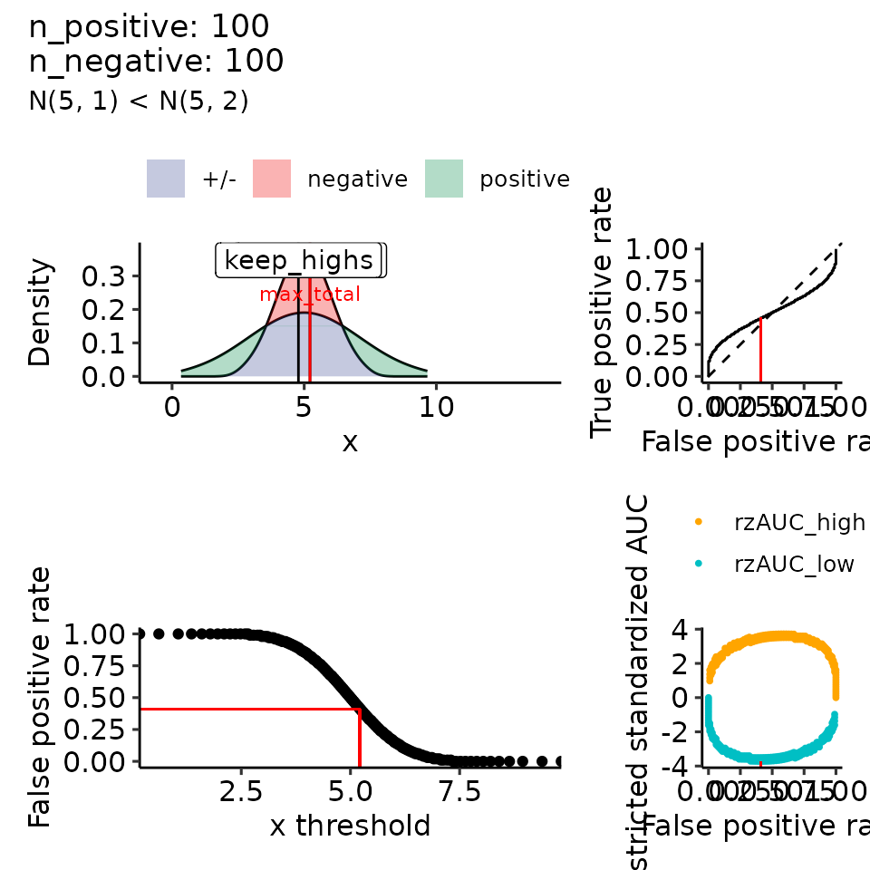
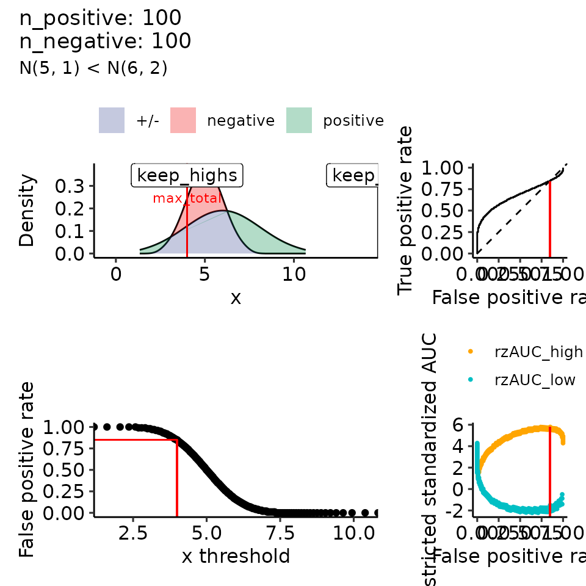
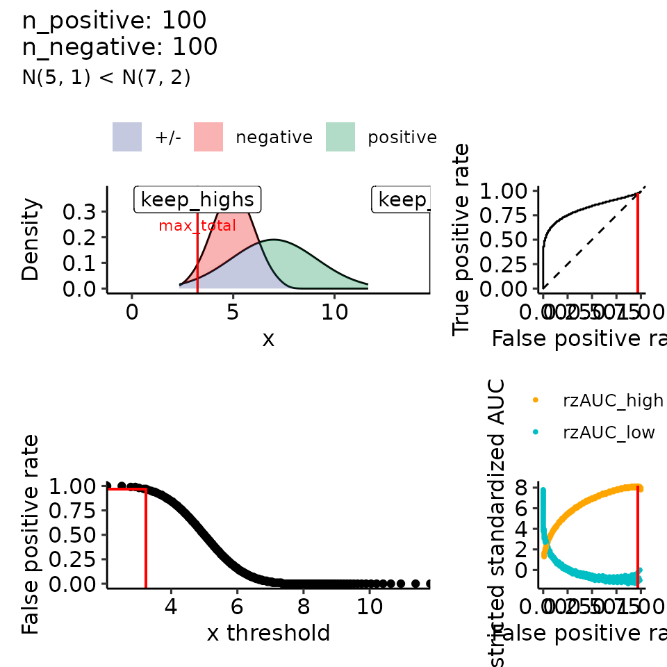
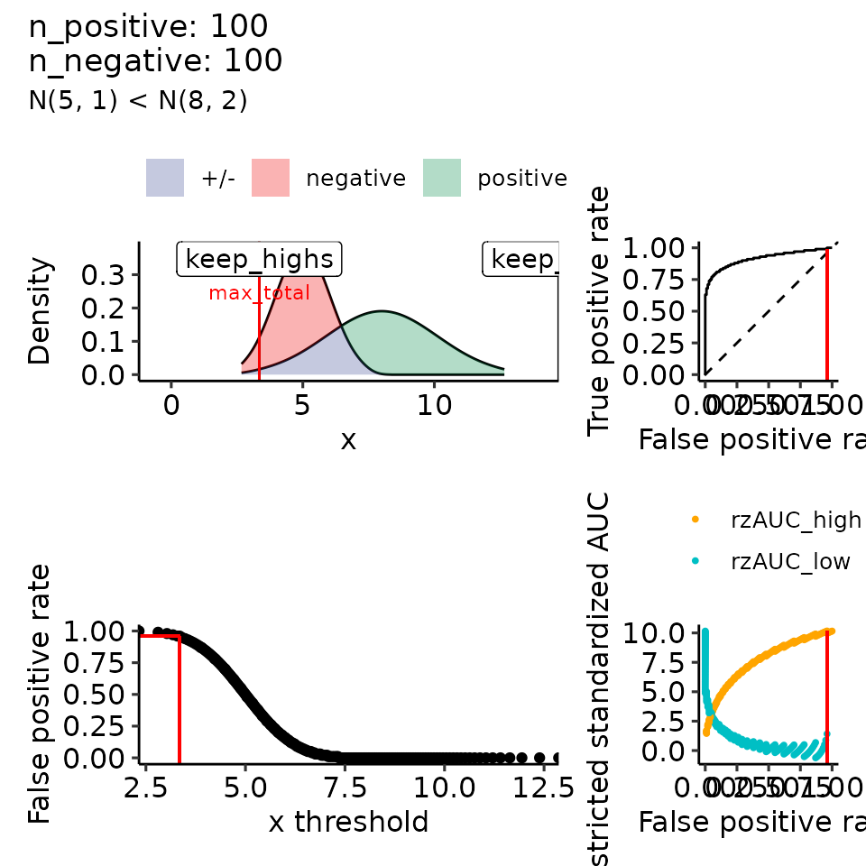
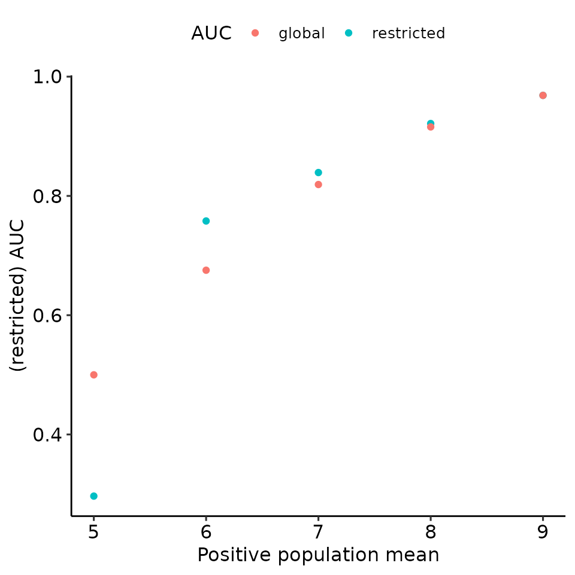
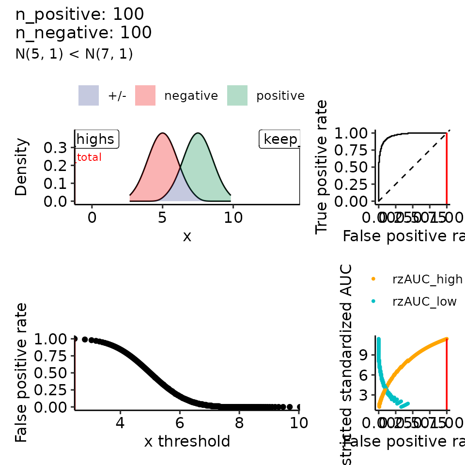
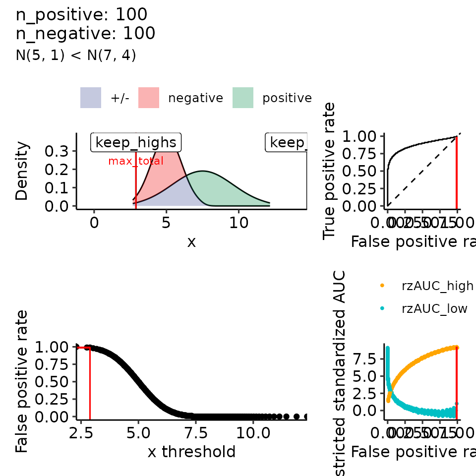
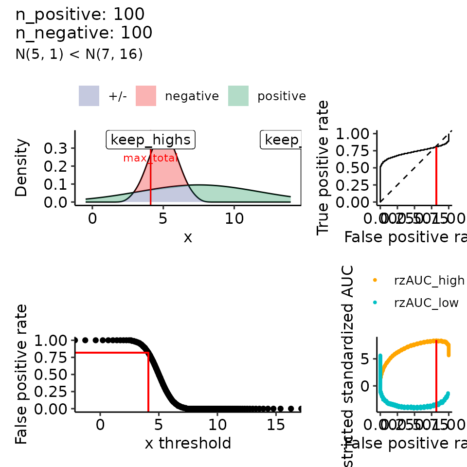

Paper 05: rROC with varying mean/variance
paper_05_varying_mean_variance.Rmd
options(warn = 1)
library(restrictedROC)
library(dplyr)
#>
#> Attaching package: 'dplyr'
#> The following objects are masked from 'package:stats':
#>
#> filter, lag
#> The following objects are masked from 'package:base':
#>
#> intersect, setdiff, setequal, union
library(ggplot2)
library(patchwork)
dir.create("res/paper", recursive = TRUE)
#> Warning in dir.create("res/paper", recursive = TRUE): 'res/paper' already
#> existsVarying mean
n_positives <- 100
n_negatives <- 100
# how_many_values <- 50 # takes too long for vignette but was done for the paper
how_many_values <- 5
vary_mu <- list()
for (mean_positive in seq(from = 5, to = 9, length.out = how_many_values)) {
print(mean_positive)
tmp <- plot_rROC_theoretical(
qnorm_positive = function(x) qnorm(x, mean = mean_positive, sd = 2),
qnorm_negative = function(x) qnorm(x, mean = 5, sd = 1),
n_positive = n_positives,
n_negative = n_negatives,
return_all = TRUE
)
tmp[["rroc"]][["plots"]] <- tmp[["rroc"]][["plots"]] +
patchwork::plot_annotation(
subtitle = paste0("N(5, 1) < N(", round(mean_positive, 2), ", 2)")
)
vary_mu[[as.character(mean_positive)]] <- tmp
}
#> [1] 5
#> [1] 6
#> [1] 7
#> [1] 8
#> [1] 9
# pdf("res/paper/vary_means.pdf")
print(
lapply(vary_mu, function(x) {
tmp <- x[["rroc"]][["plots"]]
tmp[[1]] <- tmp[[1]] + xlim(c(-.5, 14))
return(tmp)
})
)
#> $`5`
#>
#> $`6`
#>
#> $`7`
#>
#> $`8`
#>
#> $`9`
# dev.off()
globals <- lapply(vary_mu, function(x) unlist(x[["rroc"]][["single_rROC"]][["global"]]))
maxes <- lapply(vary_mu, function(x) unlist(x[["rroc"]][["single_rROC"]][["max_total"]][-6]))
maxes_part <- lapply(vary_mu, function(x) unlist(x[["rroc"]][["single_rROC"]][["max_total"]][6]))
globals_df <- tibble::as_tibble(t(as.data.frame(globals)))
globals_df$pos_mean <- as.numeric(names(globals))
globals_df$max_global <- "global"
globals_df$threshold <- NA
globals_df$part <- "global"
maxes_df <- tibble::as_tibble(t(as.data.frame(maxes)))
maxes_df$pos_mean <- as.numeric(names(maxes))
maxes_df$part <- unlist(maxes_part)
maxes_df$max_global <- "restricted"
total_df <- rbind(maxes_df, globals_df)
# pdf("res/paper/vary_means_perfVSmean.pdf")
print(
total_df %>%
ggplot(aes(x = pos_mean, y = auc, col = max_global)) +
geom_point() +
ylab("(restricted) AUC") +
xlab("Positive population mean") +
guides(col = guide_legend(title = "AUC")) +
ggpubr::theme_pubr()
)
print(
total_df %>%
ggplot(aes(x = pos_mean, y = rzAUC, col = max_global)) +
geom_point() +
ylab("(restricted) standarized AUC") +
xlab("Positive population mean") +
guides(col = guide_legend(title = "rzAUC")) +
ggpubr::theme_pubr()
)
# dev.off()Varying sigma
vary_sigma <- list()
for (sigma_positive in seq(from = 1, to = 5, length.out = how_many_values)) {
print(sigma_positive)
tmp <- plot_rROC_theoretical(
qnorm_positive = function(x) qnorm(x, mean = 7.5, sd = sigma_positive),
qnorm_negative = function(x) qnorm(x, mean = 5, sd = 1),
n_positive = n_positives,
n_negative = n_negatives,
return_all = TRUE
)
tmp[["rroc"]][["plots"]] <- tmp[["rroc"]][["plots"]] +
patchwork::plot_annotation(
subtitle = paste0("N(5, 1) < N(7, ", round(sigma_positive^2, 2), ")")
)
vary_sigma[[as.character(sigma_positive)]] <- tmp
}
#> [1] 1
#> [1] 2
#> [1] 3
#> [1] 4
#> [1] 5
# pdf("res/paper/vary_sigma.pdf")
print(
lapply(vary_sigma, function(x) {
tmp <- x[["rroc"]][["plots"]]
tmp[[1]] <- tmp[[1]] + xlim(c(-.5, 14))
return(tmp)
})
)
#> $`1`
#>
#> $`2`
#>
#> $`3`
#> Warning: Removed 18 rows containing non-finite outside the scale range
#> (`stat_align()`).
#> Warning: Removed 18 rows containing missing values or values outside the scale range
#> (`geom_line()`).
#> Removed 18 rows containing missing values or values outside the scale range
#> (`geom_line()`).#>
#> $`4`
#> Warning: Removed 112 rows containing non-finite outside the scale range
#> (`stat_align()`).
#> Warning: Removed 112 rows containing missing values or values outside the scale range
#> (`geom_line()`).
#> Removed 112 rows containing missing values or values outside the scale range
#> (`geom_line()`).
#>
#> $`5`
#> Warning: Removed 190 rows containing non-finite outside the scale range
#> (`stat_align()`).
#> Warning: Removed 190 rows containing missing values or values outside the scale range
#> (`geom_line()`).
#> Removed 190 rows containing missing values or values outside the scale range
#> (`geom_line()`).
# dev.off()
globals <- lapply(vary_sigma, function(x) unlist(x[["rroc"]][["single_rROC"]][["global"]]))
maxes <- lapply(vary_sigma, function(x) unlist(x[["rroc"]][["single_rROC"]][["max_total"]][-6]))
maxes_part <- lapply(vary_sigma, function(x) unlist(x[["rroc"]][["single_rROC"]][["max_total"]][6]))
globals_df <- tibble::as_tibble(t(as.data.frame(globals)))
globals_df$pos_sigma <- as.numeric(names(globals))
globals_df$max_global <- "global"
globals_df$threshold <- NA
globals_df$part <- "global"
maxes_df <- tibble::as_tibble(t(as.data.frame(maxes)))
maxes_df$pos_sigma <- as.numeric(names(maxes))
maxes_df$part <- unlist(maxes_part)
maxes_df$max_global <- "restricted"
total_df <- rbind(maxes_df, globals_df)
# pdf("res/paper/vary_sigma_perfVSsigma.pdf")
print(
total_df %>%
ggplot(aes(x = pos_sigma, y = auc, col = max_global)) +
geom_point() +
ylab("(restricted) AUC") +
xlab("Positive population standard deviation") +
guides(col = guide_legend(title = "AUC")) +
ggpubr::theme_pubr()
)
print(
total_df %>%
ggplot(aes(x = pos_sigma, y = rzAUC, col = max_global)) +
geom_point() +
ylab("(restricted) standarized AUC") +
xlab("Positive population standard deviation") +
guides(col = guide_legend(title = "rzAUC")) +
ggpubr::theme_pubr()
)
# dev.off()
# save(vary_mu, vary_sigma, file = "paper05_varies.rda")Animations
For the animations, multiple packages and also system programs are necessary, therefore we only show the code here but do not run it when creating the vignette to keep cross-platform running. The following setup was done to create the animations:
pacman::p_install("gganimate", force = FALSE)
library(gganimate)
# apt-get install -y libmagick++-dev
pacman::p_install("magick", force = FALSE)
library(magick)
pacman::p_install("rsvg", force = FALSE)
# sudo sed -i 's/disk" value="1GiB/disk" value="10GiB/g' /etc/ImageMagick-6/policy.xml
# apt-get install -y libavfilter-dev
pacman::p_install("av", force = FALSE)Mean
# load(file = "paper05_varies.rda")
globals <- lapply(vary_mu, function(x) unlist(x[["rroc"]][["single_rROC"]][["global"]]))
maxes <- lapply(vary_mu, function(x) unlist(x[["rroc"]][["single_rROC"]][["max_total"]][-6]))
maxes_part <- lapply(vary_mu, function(x) unlist(x[["rroc"]][["single_rROC"]][["max_total"]][6]))
globals_df <- tibble::as_tibble(t(as.data.frame(globals)))
globals_df$pos_mean <- as.numeric(names(globals))
globals_df$max_global <- "global"
globals_df$threshold <- NA
globals_df$part <- "global"
maxes_df <- tibble::as_tibble(t(as.data.frame(maxes)))
maxes_df$pos_mean <- as.numeric(names(maxes))
maxes_df$part <- unlist(maxes_part)
maxes_df$max_global <- "restricted"
mean_df <- rbind(maxes_df, globals_df)
animation_perf_mean <- mean_df %>%
ggplot(aes(x = pos_mean, y = auc, col = max_global)) +
geom_point() +
geom_line() +
ylab("(restricted) AUC") +
xlab("Positive population mean") +
guides(col = guide_legend(title = "AUC")) +
ggpubr::theme_pubr() +
transition_reveal(pos_mean)
dir.create("gifs")
unlink("gifs/animation_perf_mean/", recursive = TRUE)
gganimate::animate(
animation_perf_mean,
renderer = file_renderer("gifs/animation_perf_mean/"),
nframes = length(unique(mean_df[["pos_mean"]])),
width = 500, height = 500, # units='mm', res = 10, # for png
# width = 500/90, height = 500/90, device = "svg" # svg: size to png seems to be with the factor 90
)
plots_rroc_mean <- lapply(vary_mu, function(x) {
tmp <- x[["rroc"]][["plots"]]
tmp[[1]] <- tmp[[1]] + xlim(c(-.5, 14))
tmp[[2]] <- tmp[[2]] + xlim(c(-.5, 14))
return(tmp)
})
# create the single pngs which are later combined into a gif:
unlink("gifs/plots_rroc_mean", recursive = TRUE)
dir.create("gifs/plots_rroc_mean")
png(filename = "gifs/plots_rroc_mean/pplot_%03d.png", width = 500, height = 500)
print(plots_rroc_mean)
dev.off()
anim_rroc_sigma <- list.files("gifs/plots_rroc_mean", full.names = TRUE) %>%
image_read()
anim_perf_sigma <- list.files("gifs/animation_perf_mean", full.names = TRUE) %>%
image_read()
combined_magick <- NA
for (i in 1:length(anim_rroc_sigma)) {
tmp <- image_append(c(anim_rroc_sigma[i], anim_perf_sigma[i]))
if (i == 1) {
combined_magick <- tmp
} else {
combined_magick <- c(combined_magick, tmp)
}
}
dir.create("res/paper/gifs")
image_write_gif(combined_magick, "res/paper/gifs/vary_mean.gif", delay = .15)
image_write_gif(combined_magick, "res/paper/gifs/vary_mean_slow.gif", delay = 1)
# # sudo apt-get install -y libavfilter-dev
# pacman::p_install("av")
# magick::image_write_video(combined_magick, "gifs/magick_video.mp4")Variance
# load(file = "paper05_varies.rda")
globals <- lapply(vary_sigma, function(x) unlist(x[["rroc"]][["single_rROC"]][["global"]]))
maxes <- lapply(vary_sigma, function(x) unlist(x[["rroc"]][["single_rROC"]][["max_total"]][-6]))
maxes_part <- lapply(vary_sigma, function(x) unlist(x[["rroc"]][["single_rROC"]][["max_total"]][6]))
globals_df <- tibble::as_tibble(t(as.data.frame(globals)))
globals_df$pos_sigma <- as.numeric(names(globals))
globals_df$max_global <- "global"
globals_df$threshold <- NA
globals_df$part <- "global"
maxes_df <- tibble::as_tibble(t(as.data.frame(maxes)))
maxes_df$pos_sigma <- as.numeric(names(maxes))
maxes_df$part <- unlist(maxes_part)
maxes_df$max_global <- "restricted"
sigma_df <- rbind(maxes_df, globals_df)
animation_perf_sigma <- sigma_df %>%
ggplot(aes(x = pos_sigma, y = auc, col = max_global)) +
geom_point() +
geom_line() +
ylab("(restricted) AUC") +
xlab("Positive population standard deviation") +
guides(col = guide_legend(title = "AUC")) +
ggpubr::theme_pubr() +
transition_reveal(pos_sigma)
dir.create("gifs")
unlink("gifs/animation_perf_sigma/", recursive = TRUE)
gganimate::animate(
animation_perf_sigma,
renderer = file_renderer("gifs/animation_perf_sigma/"),
nframes = length(unique(sigma_df[["pos_sigma"]])),
width = 500, height = 500, # units='mm', res = 10, # for png
# width = 500/90, height = 500/90, device = "svg" # svg: size to png seems to be with the factor 90
)
# gganimate::anim_save("gifs/removeme.gif", animation_perf_sigma)
plots_rroc_sigma <- lapply(vary_sigma, function(x) {
tmp <- x[["rroc"]][["plots"]]
tmp[[1]] <- tmp[[1]] + xlim(c(-.5, 14))
tmp[[2]] <- tmp[[2]] + xlim(c(-.5, 14))
return(tmp)
})
# create the single pngs which are later combined into a gif:
unlink("gifs/plots_rroc_sigma", recursive = TRUE)
dir.create("gifs/plots_rroc_sigma")
png(filename = "gifs/plots_rroc_sigma/pplot_%03d.png", width = 500, height = 500)
print(plots_rroc_sigma)
dev.off()
anim_rroc_sigma <- list.files("gifs/plots_rroc_sigma", full.names = TRUE) %>%
image_read()
anim_perf_sigma <- list.files("gifs/animation_perf_sigma", full.names = TRUE) %>%
image_read()
combined_magick <- NA
for (i in 1:length(anim_rroc_sigma)) {
tmp <- image_append(c(anim_rroc_sigma[i], anim_perf_sigma[i]))
if (i == 1) {
combined_magick <- tmp
} else {
combined_magick <- c(combined_magick, tmp)
}
}
dir.create("res/paper/gifs")
image_write_gif(combined_magick, "res/paper/gifs/vary_sigma.gif", delay = .15)
image_write_gif(combined_magick, "res/paper/gifs/vary_sigma_slow.gif", delay = 1)
# # sudo apt-get install -y libavfilter-dev
# pacman::p_install("av")
# magick::image_write_video(combined_magick, "gifs/magick_video.mp4")